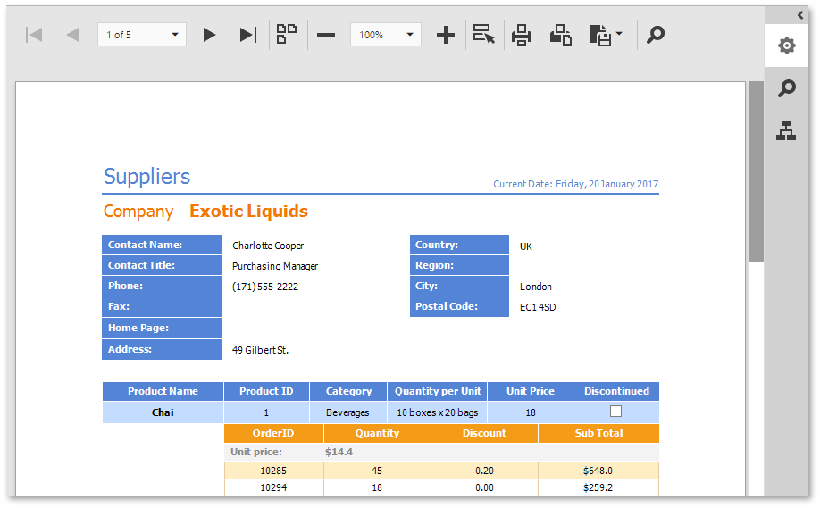

Document Viewer
The Web Document Viewer displays an interactive preview of a document generated from a report that is designed in the DevExpress Reporting platform. The Document Viewer allows the user to view, print, and export the report document.
The Viewer has a toolbar with commands that allows you to view, navigate, print and export the document. The Viewr's side panel has tabs that open the Parameters panel to specify report parameters, the Export Options panel to specify export settings for different formats, the Search panel for text search in the document, and the Document Map that allows you to navigate the bookmarks in the document.

View and Navigate
- Navigate Between Pages
- Navigate Using Bookmarks
- Search for a Specific Text
- Switch Multipage Mode
- Zoom
Interactivity
Parameters
Export